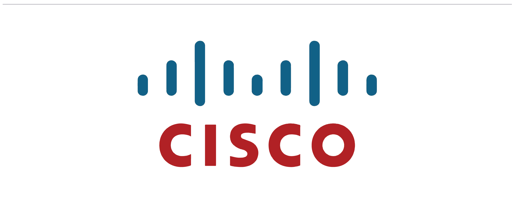

Ineligible: Requires at least a 3.7 GPA

Question: How long are Microsoft internships?
Answer: All internships are 12 weeks long and typically start in May or June and end in August or September
Question: What internship roles are available?
Answer: At Microsoft a summer intern can either be a Software Developer Engineer (SDE), a Software Developer Engineer in Test (SDET), or a Program Manager (PM).
Question: Where can I find more information?
Answer: Please visit this link to find out more detailed information about our internship programs.